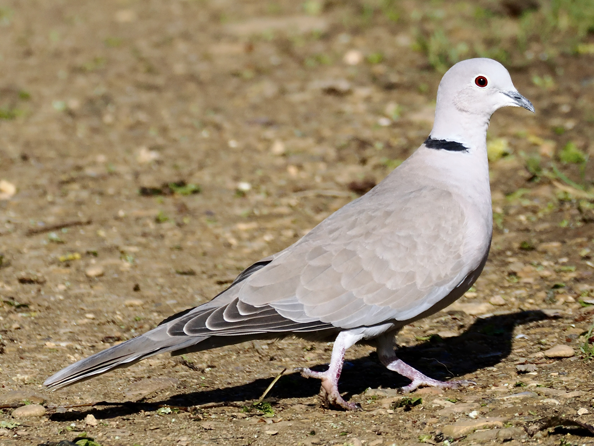

Eurasian Collared Dove
Streptopelia decaocto
Order: Columbiformes
Family: Columbidae

A grey-brown dove with red eyes. A black collar with white edges sits on the back on the neck. Found in open country, but also in urban areas in some European cities.